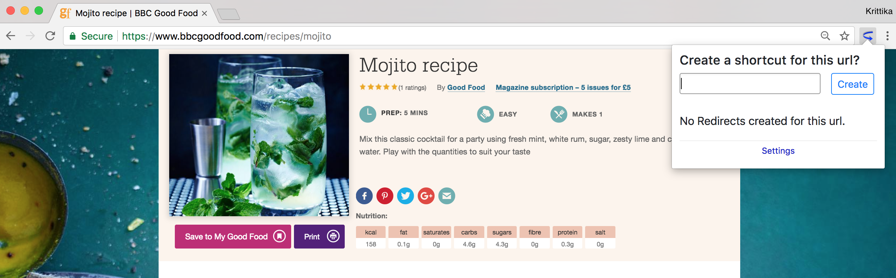
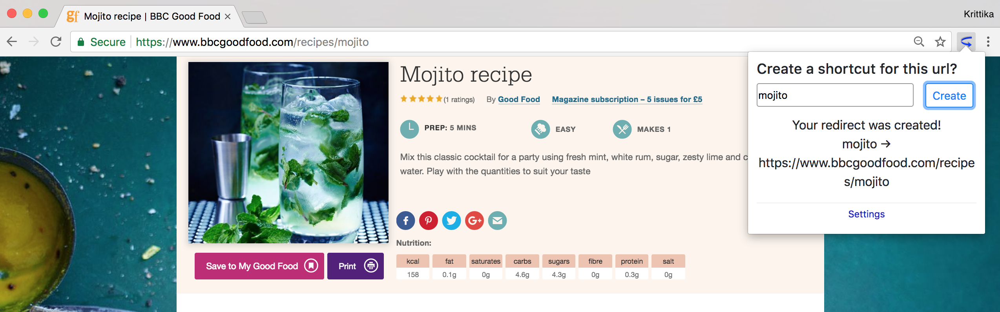
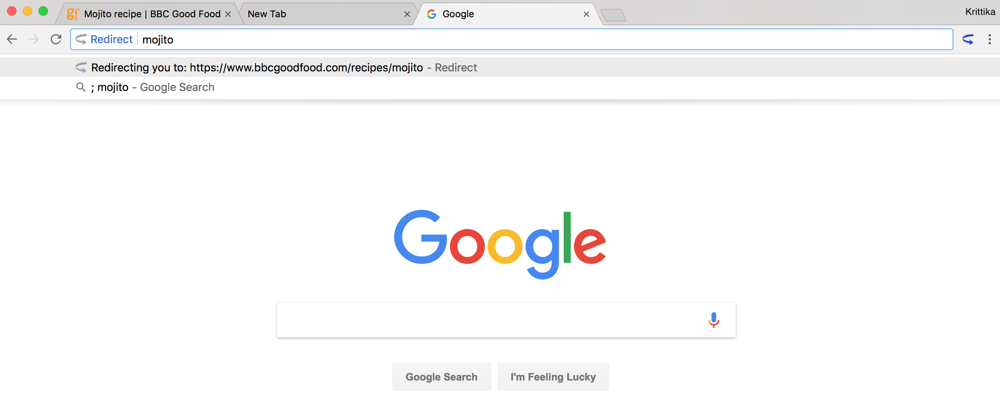

 Do you have a favorite mojito recipe? Or a Google Doc you often open? Rather than search through your lists of bookmarks or Google Drive folders, you can create a Redirect. That simple keyword will take you straight to your site and can save you clicks and time. It simplifies your Chrome workflow, allowing you to quickly get to your favorite sites.

Redirects can be any length and can include non-alphanumeric characters.
This presents a number of interesting use cases. For example, you could
set newdoc to map to
docs.google.com/document/create,
enabling you to create a new Google Doc
with just a few characters.

To trigger Redirect, type into the address bar ; (a semicolon), followed
by a space. Next, type your saved Redirect
and then enter. This will open the
saved URL in your browser. You can view all of your saved Redirects
under the Settings page. You can also delete Redirects and create new
ones in the Settings page.
Redirect makes navigating fast and easy
Please contact us with comments, suggestions, questions or bug reports.